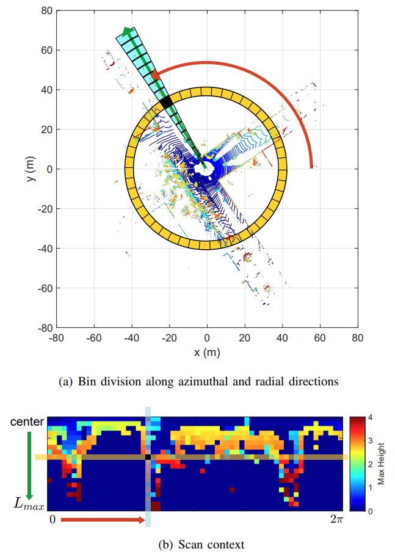

[2018 IROS] Scan Context: Egocentric Spatial Descriptor for Place Recognition within 3D Point Cloud Map
2018 IROS paper on Lidar loop detection
Researchers at KAIST, Korea. First Author: Giseop Kim
영상 기반 recognition은 유명하나 illumination variance 및 environmental change에 민감하다. Lidar는 strong invariance to perceptual variance 함
초기에는 computer graphics에서의 3D model에 사용된 local keypoint descriptor들이 noise에 대한 vulnerability를 가짐에도 많이 사용됨. 이런 일들은 주로 local 그리고 global한 descriptor를 개발하는데 연구가 진행됨.
Lidar 기반 place recognition의 두가지 이슈:
- Descriptor는 rotational invariance를 가져야함
- Noise handling issue
기존 방법에는 histogram을 이용하여 이 두가지 이슈를 해결하고자 하였으나, 이는 scene의 stocastic index를 제공할 뿐 detailed structure를 묘사하지는 않아 인식하기 힘들어 false positive를 야기시킬 수 있다.
Scan Context는 다음 그림과 같이 3D scan을 2.5D 정보를 가지고 있는 행렬로 표현한다.

Contributions are:
- Efficient bin encoding function
- Preservation of internal structure of a point cloud
- Effective two-phase matching algorithm
- Thorough validation against other SOTA spatial discriptors
- M2DP, ESF, Z-projection 과 비교
Related work
Visual methods
- FAB-MAP
- increased robustness with probablistic approach by learning a generative model for the bag of visual words
- 하지만, liight condition change에 vulnerable하다
- SeqSLAM
- proposed route-based approach
- SRAL
- Long-term visual recognition을 위해 색, GIST, HOG를 섞음
Lidar-based methods
Lidar 기반 방법들은 local한 방법과 global한 방법으로 나뉘어짐
- Local Descriptors
- PFH, SHOT, shape context, spin image는 keypoint를 찾아 주변 점들을 bin으로 나누고 둘러싼 bin들의 pattern을 histogram으로 encodding한다.
- Steder et al은 point feature와 gestalt descriptor를 이용해 bag of words 방식으로 만듦
- 이러한 방법들은 기존 3D model기반이지 place recognition에 적합하지 않다.
- 거리에 따라 density 변화, normal direction noise
- Global Descriptors
- Keypoint detecting phase를 포함 안함
- GLARE와 그 변종들은 point들의 기하학적 관계를 histogram에 encoding함
- ESF는 shape function으로 만들어진 histogram을 concatenation함
- Z-projection은 normal vector의 histogram이고, two distance function의 double threshold scheme을 사용함
- M2DP는 3D point들을 2D plane으로 projection하여 192 dimensional compact global representation을 추출함
- 기존 방법들 중 가장 좋은 성능을 나타내고 noise와 resolution change에 강인함
- SegMatch는 segment-based matching을 사용하였으며 이는 high-level perception으로 training이 필요하고 global reference frame에서 point가 나타내져야함
Scan context은 Shape context에 기반하였으며 세가지 phase로 이루어짐
- the representation that preserves absolute location information of a point cloud in each bin
- efficient bin encoding function
- two-step search algorithm
Methodology
Scan Context
Scan context는 Shape context에 영향을 받았다고 하는데, Shape context 내용을 대충 보니 Text recognition 등에 사용할 수 있도록 어떤 point cloud에 대해 n개의 점을 뽑고 그 점들 각각에 대해 descriptor를 만들어 matching하는 형식이다.
차이점 :
- 여기서 shape context는 각 bin에 해당되는 점들의 갯수를 이용했다면 scan context는 bin에 해당되는 점들의 maximum height를 사용하였다.
- Shape context는 여러 점을 뽑아서 그에 해당되는 descriptor들을 만들지만, scan context는 로봇의 위치(또는 라이더 기준)을 기반으로 제작하여 egocentric하게 만든다.
- Egocentric visibility has been a well-known concept in urban design literature for analyzing an identy of a place
Shape context와 비슷하게 3D scan을 azimuth와 radial bin으로 동일하게 나눈다.(여기선 azimuth 방향으로 60개를, radial 방향으로 20개를 이용)
Bin의 모양이 멀리갈수록 넓어지는데 이는 먼 point의 sparcity를 보완하고 근처의 dynamic object를 sparse noise로 취급한다. (후자가 이해가 안됨)
수식으로 나타내면 다음과 같다.
i번째 ring(radial), j번째 sector(azimuth)에 대한 point set을 \(\mathcal{P}_{ij}\) 라 하면
\(\phi(\mathcal{P}_{ij})\) \(= \max_{\mathbf{p}\in\mathcal{P}_{ij}} z(\mathbf{p})\) 라는 가장 높은 height값을 리턴하는 함수를 정의하고
이미지에 대해 \(I=(a_{ij})\in \mathbb{R}^{N_r \times N_s}\), \(a_{ij} = \phi(\mathcal{P}_{ij})\)
위치에 따라 Scan context image가 변할 것을 대비해 \(N_{tans}\)개의 위치를 선정해 거기서의 Scan context image를 만든다. (Lane 변하는 것을 기준.. 아마 Horizontal 방향으로 앞 뒤 좌 우 대각선들 아닐까)
Similarity Score between Scan Contexts
Scan context image \(I^q\) 와 \(I^c\)에 대해 column별 비교를 하게 되는데 이때 각 이미지의 j번째 column vector를 \(c_j^q\), \(c_j^c\)라 하면 (query의 q, candidate의 c인가) distance metric은 다음과 같다.
\(d(I^{q}, I^{c})\) \(= \frac{1}{N_s} \sum_{j=1}^{N_s} \left( 1- \frac{c_j^q \cdot c_j^c }{\lVert c_j^q \rVert \lVert c_j^c \rVert} \right)\)
여기서 \(\frac{c_j^q \cdot c_j^c }{\lVert c_j^q \rVert \lVert c_j^c \rVert}\)는 cosine distance라 부른다.